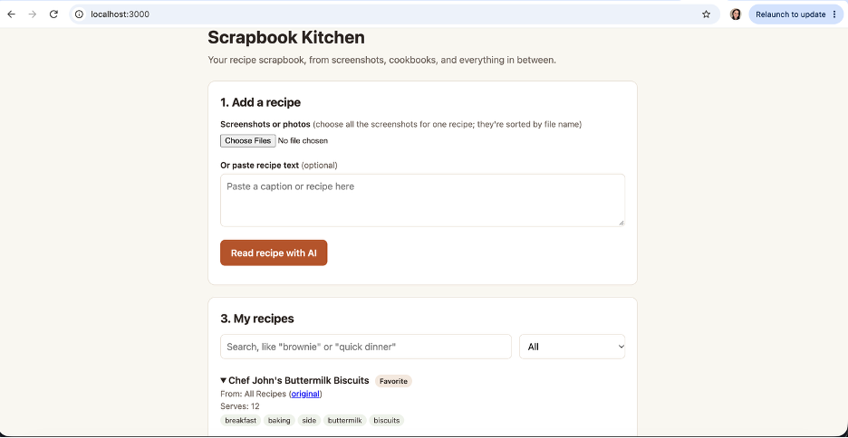
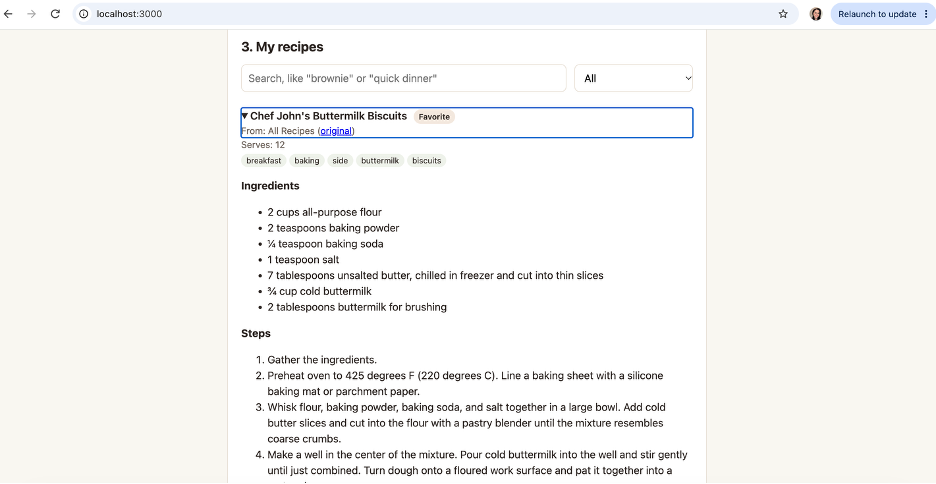

Product Showcase (Prototype / Live App / 2-Min Video)
Current Status: Build 1: local prototype (runs on my laptop)
Demo: Screenshots of the local prototype below. The live cloud app link comes in Build 5.

Add a recipe from screenshots or pasted text, then find it later in My recipes.

A saved recipe after AI extraction and my review, with its source, tags, ingredients, and steps.
Living PRD (Product Requirements Document)
Updated every week as we test with real users and learn what works.
1. Target User & The Job to Be Done
Who is this for? Me first, plus a family member and my class pod. More broadly, it's for home cooks and bakers who get inspired by recipes and videos they find online or in books, and want to be able to find them again. I'll use it myself every week and recruit testers directly.
The painful "Before" workflow: I save several recipes a week, mostly by saving videos on social media, but I often never go back to them. The recipes I love and use again and again, I email to myself as links. About once a week I try to find something I saved. I often forget I saved it, can't find the video again, or remember seeing something amazing but can't remember what it was.
The "After" workflow with this product: When I find a recipe, I upload one or more screenshots or photos (of a social media post, a recipe website, a cookbook page, or a handwritten family recipe), or paste recipe text. AI turns it into a clean recipe with a title, ingredients, steps, and where it came from. I review and fix the result, then save it as "want to try" or "favorite" with a link back to the original image or post. Later, I search my saved recipes by keyword ("brownie", "chicken", "stuffing") or by description ("quick dinner", "chocolate desserts"), pull one up, and cook from it.
2. Scope & Explicit Non-Goals
- In Scope (Core Workflow): Upload one or more images (or paste text) → AI extracts the recipe → I review and fix it → save it as "want to try" or "favorite" with its source attached → search by keyword or description and cook from it.
- Out of Scope #1: Meal planning
- Out of Scope #2: Grocery lists
- Out of Scope #3: Calendars
- Later Builds (wanted, but not part of this core workflow): Analyzing the video and audio from a social media video link to pull out the recipe; scaling servings and converting units; nutrition information; sharing recipes; more ways to organize beyond "want to try" and "favorite".
3. How It Works Under the Hood & Riskiest Assumption (Week 2+)
Riskiest Assumption: [What is the #1 technical or user risk that could sink this product?]
Simple Architecture: [User Input] → [Your App / Server] → [AI Model / Tool] → [Output]
4. Unit Economics & Analytics Snapshot (Updated Weekly)
Cumulative Build Spend
$5.04
Est. Cost Per User Run
~$0.002 per recipe
User Evidence (Analytics from Build 2)
[Not yet measured]
Sponsor Call (Week 6)
TBD
Weekly Build Log
Build on at least two separate days each week outside class, including the November 3 break. Push commits and log actual progress, failures, PRD changes, costs, and hours here. All build deadlines are noon, New York time.
Build 1 · Intent.md & Throwaway Prototype (Due Nov 9)
- What shipped: PRD v1 and a working local prototype (screenshots above). I upload one or more screenshots or paste recipe text, AI turns it into a clean recipe, and I review it, save it as "want to try" or "favorite," and search for it later. I tested it on real recipes from a handwritten family card, a social media caption, an ad-heavy recipe website, and an All Recipes page. It got every ingredient and step right on the three I checked line by line.
- Things learned with AI: In Terminus Episodes 1 and 2, I learned the basics: the difference between Git and GitHub, what it means to push, and how to keep API keys in a
.env file so they're never pushed publicly to GitHub. It surprised me how easy it was to use a coding agent to build this, and that it told me exactly what still needed to be done.
- What broke / changed in PRD: None of my real recipes fit on one screen. They took 3–5 screenshots each, so the PRD now says "upload one or more images," and the app merges overlapping screenshots. Handwritten family recipes became a source I hadn't planned for, so the AI marks words it's unsure of for me to check. Screenshots rarely include a link, so linking back to the original means pasting it myself. Searching by description, like "quick dinner," depends on tags the AI adds, which I still need to test with more recipes.
- Cost & time this week: $5.04 ($5 Claude Code, my share of a $20/month Pro plan, + $0.04 OpenRouter) · 4 hours
Build 2 · Smallest Local Version & PostHog (Due Nov 16)
- What shipped: [Local working slice, PostHog verified on this page and the local app, PRD v2, and local setup in AGENTS.md]
- What broke / changed in PRD: [Fill in]
- Cost & time this week: $[0.00] · [0] hours
Build 3 · Build.exe: The Core Workflow (Due Nov 23)
- What shipped: [End-to-end workflow working with real inputs + PostHog funnel events]
- What broke / changed in PRD: [Fill in]
- Cost & time this week: $[0.00] · [0] hours
Build 4 · Test.py: Choose Track A or Track B (Due Nov 30)
- Chosen track: [A: 10-case domain eval and one outside target-user review; OR B: 3–5 outside users and replay findings]
- Results and improvements: [Before/after evidence; for Track B, fixes to the top three friction points]
- PRD v4 changes: [What the evidence changed]
- Cost & time this week: $[0.00] · [0] hours
Build 5 · Ship.installer: Launch Ops, Rollback Check & 2-Min Video (Due Dec 7)
- Launch Ops & Safety: [Verified no exposed keys, set spend cap, tested 2-minute rollback]
- 2-Minute Video & Final Polish: [Link/embed above]
- Cost & time this week: $[0.00] · [0] hours